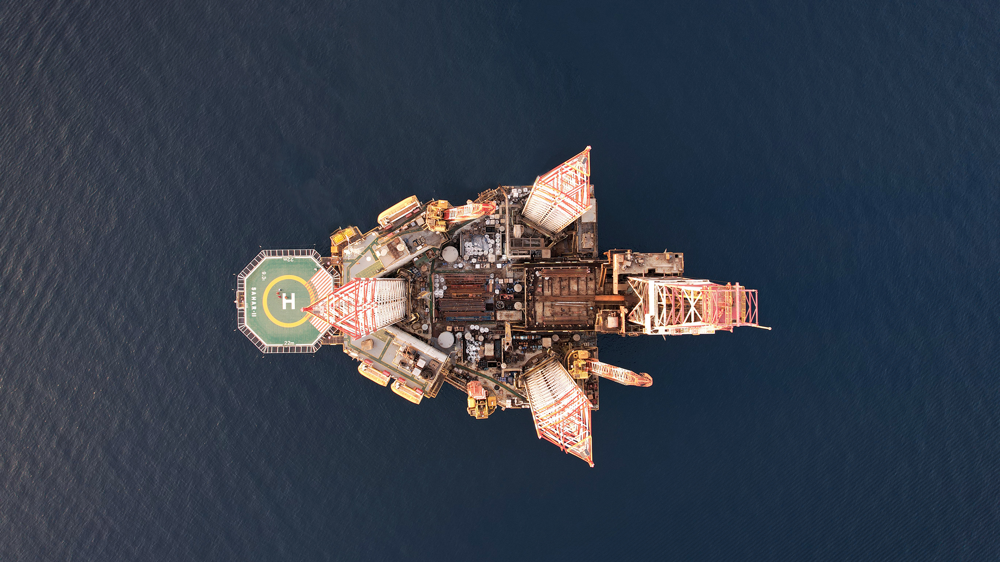

شرکتها و نهادها · اطلس بازیگران انرژی
حفاری شمال؛ دکل، خدمات و انتقال تجربه
معرفی روایی شرکت حفاری شمال بر اساس گزارش تفسیری مدیریت؛ از سابقهٔ عملیاتی و خدمات حفاری تا مدیریت دانش و حرکت به سمت پروژههای میدانمحور.

آغاز فعالیت عملیاتی شرکت
شرکت حفاری شمال در گزارش تفسیری مدیریت، شرکتی معرفی میشود که تاریخ فعالیتش با تاریخ ثبت آن یکی نیست. شرکت در اواخر دههٔ ۱۳۷۰ ثبت شد، اما مدتی فعالیت عملیاتی نداشت. از اواخر سال ۱۳۸۱ ساماندهی آن آغاز شد و پس از راهاندازی دکل الیما، که پیشتر «ایران خزر» نام داشت، و انتقال آن به آبهای ترکمنستان، عملیات حفاری شرکت شروع شد.
در ادامه، شرکت به سهامی عام تبدیل شد، در بورس پذیرفته شد و به بخش غیردولتی واگذار شد. در حال حاضر نیز، بر اساس همین گزارش، شرکت در مجموعهٔ مالی و سرمایهگذاری پیشرو ایران قرار دارد و فعالیت اصلی آن در مناطق نفتخیز داخل کشور انجام میشود.
این سابقه، آغاز فعالیت عملیاتی شرکت را از زمان ثبت آن جدا میکند. حفاری شمال پس از ساماندهی دوباره، به شرکتی با ساختار بورسی و دامنهٔ خدمات گستردهتر تبدیل شد.
دامنهٔ فعالیت شرکت
موضوع فعالیت شرکت فقط به حفر چاه محدود نمیشود. گزارش از عملیات اکتشافی، توسعهای، تزریقی، ترمیم و تعمیر چاه در خشکی، رودخانه و دریا نام میبرد. در کنار آن، خدمات فنی و جانبی حفاری، جابهجایی سکوها، مدیریت سکوهای دریایی و خشکی، مدیریت شناورها و بنادر، مطالعات مهندسی مخزن و زمینشناسی و بخشی از خدمات مهندسی و پشتیبانی نیز در دامنهٔ فعالیت شرکت قرار دارد.
در بخش خدمات اصلی، از راهسازی و احداث ساختمانهای اسکان پرسنل و انبارها نیز بهعنوان فعالیتهای قابل انجام نام برده شده است. در نتیجه، گزارش عملیات حفاری را همراه با خدمات فنی، پشتیبانی دریایی و خشکی، نیروی انسانی و زیرساخت توضیح میدهد.
وقتی تجربه باید در سازمان بماند
بخش داراییهای فکری، یکی از متفاوتترین بخشهای گزارش است. شرکت از توجه خود به مدیریت دانش و ایجاد سازمانی با سرمایهٔ فکری صحبت میکند. در همین چارچوب، متخصصان پیشکسوت صنعت حفاری برای انتقال تجربه و دانش تخصصی به نسل جوان در شرکت حضور داشتهاند.
گزارش همچنین به مستندسازی تجربههای فنی و غیر فنی اشاره میکند. هدف اعلامشده، تقویت تصمیمگیری در سطوح مختلف عملیات و سازماندهی ایدهها برای نوآوری و خلاقیت است. این موضوع با بحث انتقال فناوری و تبدیل تجربه به دانش عملیاتی ارتباط دارد، با این تفاوت که اینجا تمرکز گزارش بر تجربهای است که در داخل یک شرکت حفاری شکل گرفته و باید در همان سازمان قابل استفاده بماند.
در این روایت، مدیریت دانش ادعایی جدا از عملیات نیست. تجربهٔ کار با تجهیزات، شناخت موقعیتهای عملیاتی و روش حل مسئله، زمانی برای شرکت قابل استفاده است که ثبت و به افراد بعدی منتقل شود. گزارش، این روند را بخشی از راهبرد مدیریت سرمایههای فکری شرکت معرفی میکند.
ناوگان و خدمات فنی مکمل
شرکت در گزارش از ناوگان حفاری خشکی و دریایی خود و مجموعهای از تجهیزات مکمل نام میبرد. تجهیزات سیمانکاری، واحدهای گلنگاری، ابزارهای آزمون چاه، تجهیزات لولهگذاری و تجهیزات سرچاهی در کنار دستگاههای حفاری قرار گرفتهاند. این ترکیب نشان میدهد که بخشی از توان عملیاتی شرکت در خدماتی قرار دارد که در اطراف عملیات اصلی حفاری انجام میشوند.
در همین بخش، شرکت از اتکا به سازندگان داخلی برای کاهش هزینهٔ خرید و از تلاش برای خرید مستقیم از سازندهٔ اصلی قطعات سخن میگوید. استفاده از اقلام موجود برای رفع نیاز و جلوگیری از خرید غیرضروری نیز در گزارش بهعنوان بخشی از مدیریت تجهیزات و کالا مطرح شده است. این تصمیمها در گزارش به تأمین قطعات، هزینهٔ خرید و پشتیبانی از تجهیزات مربوطاند.
ریسکهای عملیاتی و قراردادی
گزارش، ریسکهای شرکت را فقط به وضعیت دستگاهها محدود نمیکند. بخشی از کالاها و تجهیزات مورد نیاز از خارج تأمین میشود و تغییرات نرخ ارز هم میتواند بر خرید تجهیزات و هزینههای پیمانکاران اثر بگذارد. از طرف دیگر، دریافت مطالبات از کارفرمایان با تأخیر روبهرو شده و محدود بودن تعداد کارفرمایان، وابستگی شرکت به روابط قراردادی را افزایش میدهد.
گزارش همچنین توضیح میدهد که فشار سرمایهٔ در گردش میتواند پرداخت به پیمانکاران، سهامداران و کارکنان را دشوار کند و در بعضی موارد به دعوای حقوقی یا توقف خدمات پیمانکاران منجر شود. این بخش از گزارش با روایت مدیریت ریسک در عملیات نفتی ارتباط دارد، چون در هر دو، اثر ریسک بر ادامهٔ عملیات بررسی میشود.
حرکت از روزکارکرد به پروژه
در برنامههای آتی، شرکت از تغییر رویکرد صنعت حفاری از اجارهٔ روزانهٔ دستگاهها به اجرای پروژههای EPD و IPC صحبت میکند. برای این تغییر، بازنگری در فرآیندهای کاری، توسعه و مکانیزهکردن سامانههای نرمافزاری، تکمیل زنجیرهٔ خدمات فنی و تقویت منابع انسانی در نظر گرفته شده است.
گزارش همچنین بازسازی بخشی از دستگاههای حفاری و ادامهٔ ساخت و تجهیز پایگاه پشتیبانی در اهواز را مطرح میکند. برای اجرای این تغییر، گزارش علاوه بر تجهیزات، اصلاح فرآیندها، اطلاعات، پشتیبانی و مهارت کارکنان را نیز ضروری میداند.
جمعبندی
بر اساس این گزارش، حفاری شمال همزمان در عملیات حفاری، خدمات پشتیبان و مدیریت دانش فنی فعالیت میکند. گزارش دربارهٔ محدودیتهای مالی، ارزی و قراردادی نیز توضیح میدهد و به برنامههایی برای توسعهٔ خدمات، اصلاح فرآیندها و تغییر مدل اجرای پروژهها اشاره دارد.
این متن بر اساس گزارش تفسیری مدیریت دورهٔ مالی میانی ۹ ماههٔ منتهی به ۱۴۰۴/۰۹/۳۰ نوشته شده است. در این معرفی، عددهای مالی و جزئیات جدولها محور نیستند و تمرکز بر ساختار عملیاتی، تجربهٔ سازمانی و مسیر کاری شرکت است.
منابع این روایت
- گزارش تفسیری مدیریت دورهٔ مالی میانی ۹ ماهه منتهی به ۱۴۰۴/۰۹/۳۰ سامانهٔ کدال؛ شرکت حفاری شمال · management-report